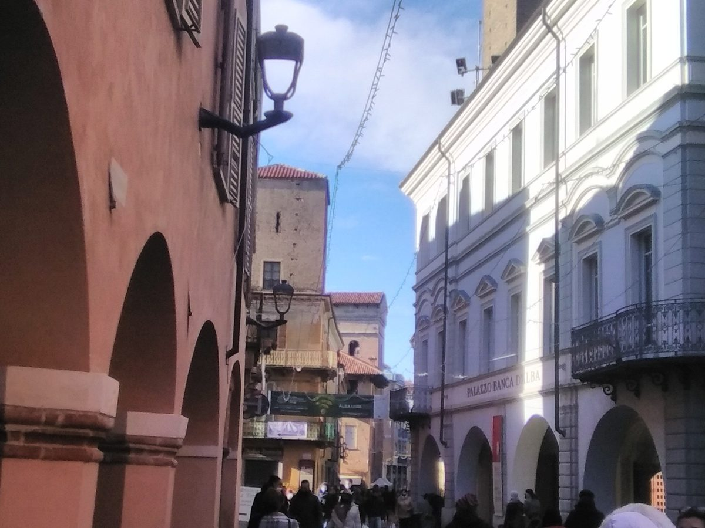

이탈리아 알바 시, 재생에너지공동체 두 곳에 조합원으로 가입 추진…지자체 30곳·조합원 1,000명 넘는 'CER 로에로' 포함

적십자에서 출발한 '연대형' 공동체와 함께 가입, 시는 새 비용 부담 없고 공공건물 계량기는 골라서 단계적으로 연결…집행부 방침 승인 뒤 시의회 본회의 남아
이탈리아 피에몬테주 알바 시가 지역의 재생에너지공동체(CER) 두 곳에 새 조합원으로 들어가는 절차를 밟고 있다. 로베르토 카발로 환경담당 정무위원은 10월 27일 시의회 제2상임위원회에서, 이탈리아 적십자 알바 위원회의 사업에서 출발한 'CER 솔리달레 알바·랑게·로에로'와 2024년 지자체 20곳이 세워 지금은 지자체 30곳과 시민·기업·기관·단체 조합원 1,000명 넘게 참여하는 'CER 로에로'에 함께 가입하는 방안을 설명했다. 시는 2026년 3월 13일부터 4월 13일까지 참여 의향 공모를 열어 두 공동체의 응모를 받았고, 시 기술위원회 검토를 거쳐 시 집행부가 9월 3일 가입 방침을 승인했으며, 이제 시의회 본회의 의결이 남았다. 카발로 위원은 조합비가 생기더라도 전기요금 혜택으로 상쇄돼 시에 새 비용 부담이 없고, 한 공동체의 설립 조합원 몫 3,000유로도 새 참여자로 들어가는 시와는 관계없다고 밝혔다. 시 계량기를 한꺼번에 넣을 의무는 없어 생산·소비 계량기를 골라 차례로 연결하게 되며, 기존 전기 공급 계약은 그대로 두고 이익은 주로 새 계량기와 앞으로 지을 공공건물 태양광에서 나올 것으로 시는 보고 있다. CER 로에로는 공동체가 받는 인센티브의 10%를 에너지 빈곤 대응과 학교 환경교육 같은 사회 사업에 쓰기로 했고, 시민과 공동주택도 공동체에 가입할 수 있다.
시민에너지 관점
지자체가 따로 공동체를 차리지 않고 이미 지자체 30곳과 1,000명 넘는 조합원이 꾸려 온 공동체에 새 조합원으로 들어가는 길은, 행정이 주인 자리를 차지하지 않으면서도 공공건물 지붕과 공신력을 보탤 수 있는 방식이다. 시가 들어오면 공동체가 시 행정에 휘둘린다는 우려가 나올 수 있지만, 알바 시는 많은 조합원 가운데 하나로 들어가고 다른 공동체 가입도 열어 두어 공동체의 결정권을 시민 조합원에게 남겼다. 네덜란드가 2019년 기후협정에서 육상 풍력·태양광 사업의 50%를 지역 소유로 하자는 목표를 세웠듯 지역 소유를 넓히려면 공공 자산이 시민 공동체 안으로 들어가야 하고, 공공이 시민 공동체의 한 구성원이 되는 방식은 그 지름길이다. 국내에서도 인센티브의 일부를 에너지 빈곤에 돌리는 것처럼 이익 배분 원칙을 정관에 담은 시민 공동체에 지자체가 조합원으로 참여하고 공공 지붕을 내놓을 수 있게 제도를 열어야 한다.
출처: La Voce di Alba 2026-10-28 d.v. 원문 보기
イタリア・アルバ市、再生可能エネルギー共同体2つに組合員として加入へ…自治体30・組合員1,000人超の「CERロエロ」も
赤十字から生まれた「連帯型」共同体とともに加入、市に新たな費用負担はなく公共施設のメーターは選んで段階的に接続…執行部の方針承認を経て市議会本会議へ
イタリア・ピエモンテ州のアルバ市が、地域の再生可能エネルギー共同体（CER）2つに新たな組合員として加わる手続きを進めている。環境担当のロベルト・カヴァッロ市政委員は10月27日の市議会第2常任委員会で、イタリア赤十字アルバ委員会の事業から生まれた「CERソリダーレ・アルバ・ランゲ・ロエロ」と、2024年に自治体20が設立し、現在は自治体30と市民・企業・機関・団体の組合員1,000人超が参加する「CERロエロ」に、そろって加入する案を説明した。市は2026年3月13日から4月13日まで参加意向の公募を行って2つの共同体の応募を受け、市の技術委員会の審査を経て市執行部が9月3日に加入方針を承認しており、あとは市議会本会議の議決を残すのみとなった。カヴァッロ委員は、組合費が生じても電気料金の優遇で相殺されるため市に新たな費用負担はなく、ある共同体の設立組合員の出資分3,000ユーロも新規参加者として加わる市には関係ないと述べた。市のメーターを一度にすべて加える義務はなく、発電用・消費用のメーターを選んで順次接続することになり、既存の電力供給契約はそのままで、利益は主に新しいメーターと今後建てる公共施設の太陽光から生まれると市はみている。CERロエロは共同体が受け取るインセンティブの10%をエネルギー貧困対策や学校の環境教育などの社会事業に充てることにしており、市民や集合住宅も共同体に加入できる。
市民エネルギーの視点
自治体が独自に共同体をつくるのではなく、すでに自治体30と1,000人を超える組合員が運営してきた共同体に新しい組合員として加わる道は、行政が主の座を占めることなく、公共施設の屋根と公的な信用を持ち寄れるやり方だ。市が入れば共同体が市行政に振り回されるとの懸念もありうるが、アルバ市は多くの組合員の一人として加わり、他の共同体への加入も認めることで、共同体の決定権を市民組合員の手に残した。オランダが2019年の気候協定で陸上風力・太陽光事業の50%を地域所有にする目標を掲げたように、地域所有を広げるには公共の資産が市民共同体の中に入っていく必要があり、公共が市民共同体の一員になる方法はその近道になる。韓国でも、インセンティブの一部をエネルギー貧困に回すような利益配分の原則を定款に定めた市民共同体に、自治体が組合員として参加し公共施設の屋根を提供できるよう制度を開くべきだ。
出典: La Voce di Alba 2026-10-28 d.v. 原文を読む
意大利阿尔巴市拟以成员身份加入两个可再生能源社区…其中"CER Roero"已有30个市镇和逾1,000名成员
与源自红十字会的"团结型"社区一同加入，市政府不新增费用，公共建筑电表可分批选择接入…市执行委员会已批准方针，尚待市议会全体会议表决
意大利皮埃蒙特大区阿尔巴市正在办理以新成员身份加入当地两个可再生能源社区（CER）的手续。负责环境事务的市政委员Roberto Cavallo于10月27日在市议会第二常设委员会上介绍了同时加入两个社区的方案：一个是源自意大利红十字会阿尔巴委员会项目的"CER Solidale Alba, Langhe e Roero"，另一个是2024年由20个市镇发起、目前已有30个市镇以及市民、企业、机构和团体等逾1,000名成员参与的"CER Roero"。市政府于2026年3月13日至4月13日公开征集参与意向，两个社区报名应征，经市技术委员会审查后，市执行委员会于9月3日批准了加入方针，目前只剩市议会全体会议表决。Cavallo表示，即使产生会费，也会被电费优惠抵消，市政府不会增加新的费用负担；其中一个社区创始成员的3,000欧元份额，也与作为新参与者加入的市政府无关。市政府没有义务一次性把所有电表纳入社区，而是可以分别挑选发电和用电电表逐步接入；现有供电合同保持不变，市政府预计收益主要来自新电表和今后建设的公共建筑光伏。CER Roero决定把社区所获激励的10%用于应对能源贫困和学校环境教育等社会项目，市民和公寓楼也可以加入社区。
市民能源视角
地方政府不另起炉灶，而是以新成员身份加入已有30个市镇和逾1,000名成员共同经营的社区，这种做法让行政部门不必占据主人位置，也能贡献公共建筑屋顶和公信力。有人担心市政府加入后社区会受行政左右，但阿尔巴市只是众多成员之一，还保留加入其他社区的可能，从而把社区的决定权留给了市民成员。正如荷兰在2019年气候协议中提出陆上风电和光伏项目50%由当地所有的目标，要扩大本地所有权，公共资产就必须进入市民社区，而由公共部门成为市民社区的一员正是捷径。韩国也应在制度上允许地方政府以成员身份加入那些在章程中写明收益分配原则（例如把部分激励用于能源贫困）的市民社区，并提供公共屋顶。
来源: La Voce di Alba 2026-10-28 d.v. 查看原文
Italian city of Alba moves to join two renewable energy communities as a member, including "CER Roero" with 30 municipalities and more than 1,000 members
It will join alongside a "solidarity" community that grew out of the Red Cross; the city faces no new costs and can connect public-building meters selectively and step by step; the executive has approved the plan, which now goes to the full council
The city of Alba in Italy's Piedmont region is working through the steps to join two local renewable energy communities (CER) as a new member. Roberto Cavallo, the councillor responsible for the environment, told the city council's second standing committee on 27 October about the plan to join both "CER Solidale Alba, Langhe e Roero", which grew out of a project of the Italian Red Cross's Alba committee, and "CER Roero", founded in 2024 by 20 municipalities and now joined by 30 municipalities and more than 1,000 members including residents, businesses, institutions and associations. The city ran a call for expressions of interest from 13 March to 13 April 2026, to which the two communities responded; after review by a municipal technical committee, the city executive approved joining on 3 September, leaving only a vote of the full council. Cavallo said the city will bear no new costs because any membership fees will be offset by savings on electricity bills, and that a 3,000-euro founding-member share in one of the communities does not apply to the city, which is joining as a new participant. The city is not obliged to bring all its meters in at once and will choose production and consumption meters to connect over time; existing supply contracts stay in place, and the city expects the benefits to come mainly from new meters and future solar installations on public buildings. CER Roero has decided to put 10% of the incentives the community receives towards social projects such as tackling energy poverty and environmental education in schools, and residents and apartment buildings can also join the communities.
Citizen Energy View
Rather than setting up its own community, a city that joins as a new member of a community already run by 30 municipalities and more than 1,000 members can contribute public roofs and credibility without taking the owner's seat. Some may fear that the community will be steered by city hall once the city is in, but Alba is joining as one member among many and keeps the door open to other communities, leaving decisions with the citizen members. Just as the Netherlands set a goal in its 2019 Climate Agreement for 50% of onshore wind and solar projects to be locally owned, widening local ownership requires public assets to move inside citizen communities, and the public sector becoming one member of such a community is a shortcut to that. Korea should likewise open the way for local governments to join, as members, citizen communities whose articles set out how profits are shared, such as earmarking part of the incentives for energy poverty, and to offer public roofs to them.
Source: La Voce di Alba 2026-10-28 d.v. Read the original